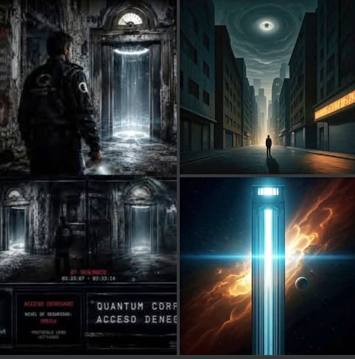

Origen de Quantum Corp
En 1998, el Sr. Blanco trabajaba como guardia de seguridad en un conocido establecimiento de la Ciudad de México. Durante un turno nocturno ocurrió un hecho imposible de explicar: un elevador apareció donde nunca había existido uno, sin cables, sin motor y envuelto por una intensa luz blanca. Al acercarse, una voz sintetizada pronunció un único mensaje: «Acceso restringido… Quantum Corp… Protocolo Cero.» Segundos después, el elevador desapareció sin dejar rastro. No hubo registros oficiales ni una explicación que pudiera justificar lo sucedido. Aquel acontecimiento marcaría para siempre la vida del Sr. Blanco. Años más tarde nació Quantum Corp, una agencia de investigación que combina la experiencia humana con la inteligencia artificial para analizar información, resolver problemas y explorar aquello que otros consideran imposible.
